| Multiple Regression: Testing and Interpreting Interactions |
| Multiple Regression: Testing and Interpreting Interactions |
交互作用項があると、変数のスケーリングで回帰係数の値は大きく変わる。
最高次の項以外が変化する
 と
と を変換しても、単純傾斜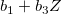は変化しない
を変換しても、単純傾斜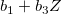は変化しない
回帰式自体は変化しても、ordinal / disordinal は変化しない
加算変換
| 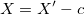 | (2.18) | ||
| 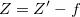 | (2.19) |
により、
 |
 |
(2.20) | ||
 |
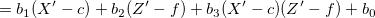 | (2.21) | ||
|
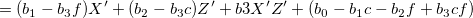 | (2.22) | ||
|
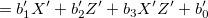 | (2.23) |
と変形できることがわかる。 つまり、交互作用項 のみが変化しない。
のみが変化しない。
加算変換
| (2.24) | |||
| (2.25) |
により、
|
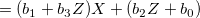 | (2.26) | ||
|
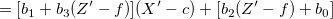 | (2.27) | ||
|
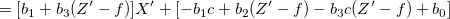 | (2.28) | ||
|
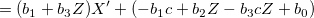 | (2.29) |
と変形できることがわかる。 つまり、単純傾斜は加算変換により変化しない。
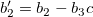より、
| 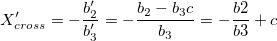 | (2.30) |
となる。 の加算変換と同じく も移動する。
も移動する。
 はセンタリングすべきか？
はセンタリングすべきか？についてはセンタリングせずにもとのスケールで評価できるのであるから、センタリングする理由は特にない。
とがセンタリングされていないと、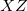や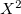と高い相関を持つ。
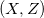との相関
との相関
は、センタリングしてあれば正規性の下ではゼロになる1。
センタリングを怠ることで生じる多重共線性のことを、非本質的な悪条件化 nonessential ill-conditioningと呼ぶ2。
のへの回帰と考えた場合、にかかる係数はの1ポイントの増加に対応するの傾きの増分である。
との1次の項の解釈センタリングがなされていれば、にかかる係数 は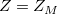の場合の傾きの大きさである。
は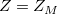の場合の傾きの大きさである。
や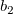はやの主効果ではない。 主効果は他の変数の取りうる値について平均化した効果。
一般に、
| 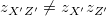 | (2.31) | ||
| 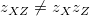 | (2.32) |
であるから、積項自体を標準化するのではなく、標準化した変数の積を用いた分析結果を「標準化解」として報告するべき3。
この場合、通常の標準化解と異なり切片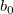はゼロとはならない。
 でも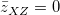とは限らない
でも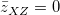とは限らない
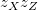の平均はとの相関に等しい
もしとが無相関ならの
平均=0
SD=1
となる
| 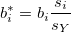 | (2.33) | ||
| 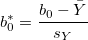 | (2.34) | ||
| 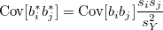 | (2.35) | ||
| 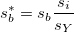 | (2.36) |
Rのデータ attitude を用いて、ここまでの分析を実行してみる。
attitudeを以下のように加工。
> data(attitude)
>
> attach(attitude)
> data01 <- data.frame(y=rating, x=complaints, z=privileges)
> detach(attitude)
>
> data01 <- data.frame(scale(data01, scale=F)) # センタリングのみ
> data02 <- data.frame(scale(data01)) # 標準化
>
> data01$xz <- data01$x * data01$z # センタリング変数の積
> data02$xz <- data02$x * data02$z # 標準化変数の積
>
> head(data01, n=5)
y x z xz
1 -21.633333 -15.6 -23.133333 360.880000
2 -1.633333 -2.6 -2.133333 5.546667
3 6.366667 3.4 14.866667 50.546667
4 -3.633333 -3.6 -8.133333 29.280000
5 16.366667 11.4 2.866667 32.680000
> head(data02, n=5)
y x z xz
1 -1.7772211 -1.1716323 -1.8906841 2.21518666
2 -0.1341816 -0.1952721 -0.1743570 0.03404706
3 0.5230342 0.2553558 1.2150506 0.31027018
4 -0.2984855 -0.2703767 -0.6647362 0.17972918
5 1.3445540 0.8561929 0.2342923 0.20059937
>
> cor(data01)
y x z xz
y 1.0000000 0.8254176 0.42611687 -0.25268076
x 0.8254176 1.0000000 0.55828820 -0.18464516
z 0.4261169 0.5582882 1.00000000 0.08644766
xz -0.2526808 -0.1846452 0.08644766 1.00000000
data01が非標準化、data02が標準化したデータ。 非標準化解と標準化解はそれぞれ以下の通り。 検定結果は全く同じ。 非標準解について、 この単純回帰直線を図示したのが図2.1。 交差点は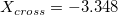。 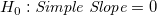の検定を行う。（方法1） メモ 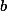の分散共分散行列 で推定するとされていたが、 ということ。 の検定を行う。（方法2） 単純傾斜のSEを用いる方法（方法1）でも、
> fit01 <- lm(y~x+z+xz, data=data01); summary(fit01) # 非標準化解
Call:
lm(formula = y ~ x + z + xz, data = data01)
Residuals:
Min 1Q Median 3Q Max
-13.3067 -4.9662 -0.5419 6.6579 8.9681
Coefficients:
Estimate Std. Error t value Pr(>|t|)
(Intercept) 0.602946 1.474594 0.409 0.686
x 0.749631 0.124986 5.998 2.48e-06 ***
z -0.022962 0.134175 -0.171 0.865
xz -0.006858 0.007864 -0.872 0.391
---
Signif. codes: 0 ‘***’ 0.001 ‘**’ 0.01 ‘*’ 0.05 ‘.’ 0.1 ‘ ’ 1
Residual standard error: 7.134 on 26 degrees of freedom
Multiple R-squared: 0.6921, Adjusted R-squared: 0.6565
F-statistic: 19.48 on 3 and 26 DF, p-value: 7.913e-07
> fit02 <- lm(y~x+z+xz, data=data02); summary(fit02) # 標準化解
Call:
lm(formula = y ~ x + z + xz, data = data02)
Residuals:
Min 1Q Median 3Q Max
-1.09317 -0.40798 -0.04452 0.54696 0.73675
Coefficients:
Estimate Std. Error t value Pr(>|t|)
(Intercept) 0.04953 0.12114 0.409 0.686
x 0.81997 0.13671 5.998 2.48e-06 ***
z -0.02308 0.13487 -0.171 0.865
xz -0.09178 0.10525 -0.872 0.391
---
Signif. codes: 0 ‘***’ 0.001 ‘**’ 0.01 ‘*’ 0.05 ‘.’ 0.1 ‘ ’ 1
Residual standard error: 0.5861 on 26 degrees of freedom
Multiple R-squared: 0.6921, Adjusted R-squared: 0.6565
F-statistic: 19.48 on 3 and 26 DF, p-value: 7.913e-07
 における単純回帰直線の傾き（単純傾斜）と切片、の予測値、単純回帰直線の交差するの値を求める。
における単純回帰直線の傾き（単純傾斜）と切片、の予測値、単純回帰直線の交差するの値を求める。
> coef01 <- fit01$coefficients
> zm <- mean(data01$z) # zの平均 (=0)
> zl <- zm - sd(data01$z) # zの平均-1SD
> zh <- zm + sd(data01$z) # zの平均+1sd
> vec.z <- c(zl,zm,zh)
> vec.slope <- coef01[2] + coef01[4]*vec.z; vec.slope # 単純傾斜
[1] 0.8335401 0.7496309 0.6657216
> vec.itcpt <- coef01[1] + coef01[3]*vec.z; vec.itcpt # 単純切片？
[1] 0.8838989 0.6029459 0.3219930
> vec.x <- seq(from=min(data01$x),to=max(data01$x),by=1) # xの範囲
> vec.yhat <- cbind(vec.slope[1]*vec.x+vec.itcpt[1],
+ vec.slope[2]*vec.x+vec.itcpt[2],
+ vec.slope[3]*vec.x+vec.itcpt[3]) # yhat
> xcross <- -coef01[3]/coef01[4]; xcross # 単純回帰直線の交差点
z
-3.348295
Figure 2.1: 単純回帰直線
> # H0: 単純傾斜=0 の検定（方法1）
> mat.v <- vcov(fit01) # 回帰係数の分散共分散行列
> vec.seb <- sqrt(mat.v[2,2]+2*vec.z*mat.v[2,4]+vec.z^2*mat.v[4,4]) # bのSE
> vec.t <- vec.slope/vec.seb; vec.t # t値
[1] 6.195257 5.997740 3.741559
> df.t <- dim(data01)[1]-3-1; df.t # 自由度
[1] 26
> pt(q=vec.t,df=df.t,lower.tail=F)*2 # 両側p値
[1] 1.490762e-06 2.476360e-06 9.139201e-04
>
> # 単純傾斜のSE
> MS <- sum(fit01$residuals^2)/df.t; MS # 残差平均平方
[1] 50.89091
> XX <- t(as.matrix(cbind(1,data01[,-1]))) %*% as.matrix(cbind(1,data01[,-1]))
> Sb <- MS * solve(XX)[-1,-1]; Sb # 回帰係数の分散共分散行列
x z xz
x 0.0156213878 -0.0098354140 2.769709e-04
z -0.0098354140 0.0180028116 -2.452723e-04
xz 0.0002769709 -0.0002452723 6.184569e-05
> mat.w <- matrix(c(1,0,zl, 1,0,zm, 1,0,zh), 3, 3); mat.w # 重み行列
[,1] [,2] [,3]
[1,] 1.00000 1.000000e+00 1.00000
[2,] 0.00000 0.000000e+00 0.00000
[3,] -12.23543 4.738108e-16 12.23543
> vec.seb <-sqrt(c(t(mat.w[,1]) %*% Sb %*% mat.w[,1],
+ t(mat.w[,2]) %*% Sb %*% mat.w[,2],
+ t(mat.w[,3]) %*% Sb %*% mat.w[,3])); vec.seb # 単純傾斜のSE
[1] 0.1345449 0.1249856 0.1779263
 は
は

(2.37)
 を本書にあるように独立変数の分散共分散行列とすると、vcov()を用いて算出した結果と一致しない。 同じ結果にするには、を
を本書にあるように独立変数の分散共分散行列とすると、vcov()を用いて算出した結果と一致しない。 同じ結果にするには、を とする必要がある。 つまり、
とする必要がある。 つまり、
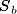
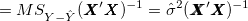
(2.38)
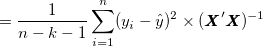
(2.39)
メモここまで
> # H0: 単純傾斜=0 の検定（方法2）
> v.zcv <- data.frame(zcvl=data01$z-zl, zcvm=data01$z-zm, zcvh=data01$z-zh)
> v.xzcv <- v.zcv * data01$x; names(v.xzcv) <- c("xzcvl","xzcvm","xzcvh")
> data01cv <- cbind(data01, v.zcv, v.xzcv)
> fit01.cvl <- lm(y~x+zcvl+xzcvl, data=data01cv); summary(fit01.cvl)
...省略...
Coefficients:
Estimate Std. Error t value Pr(>|t|)
x 0.833540 0.134545 6.195 1.49e-06 ***
...省略...
> fit01.cvm <- lm(y~x+zcvm+xzcvm, data=data01cv); summary(fit01.cvm)
Coefficients:
Estimate Std. Error t value Pr(>|t|)
x 0.749631 0.124986 5.998 2.48e-06 ***
...省略...
> fit01.cvh <- lm(y~x+zcvh+xzcvh, data=data01cv); summary(fit01.cvh)
...省略...
x 0.665722 0.177926 3.742 0.000914 ***
...省略...
の加算変換による方法（方法2）でも、同じ結果が得られていることがわかる。
Footnotes
| Multiple Regression: Testing and Interpreting Interactions |